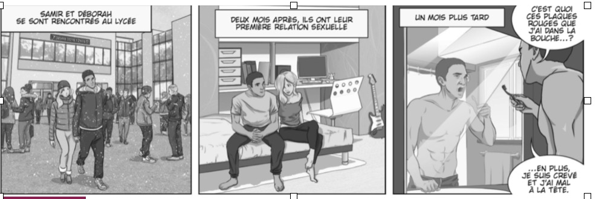
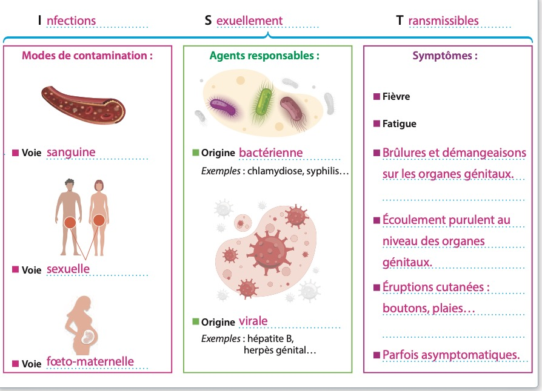
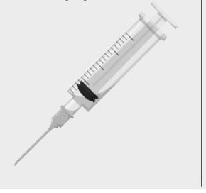
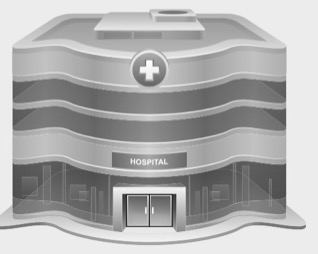
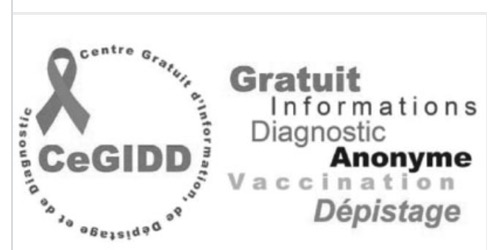

Objectif général : Être capable d'adopter un comportement responsable en matière de sexualité afin de prévenir les IST.
C1 – Traiter une informationC2 – Analyser une situationC3 – Expliquer un phénomèneC4 – Proposer une solutionC5 – Argumenter un choix
Séance 1 — Analyser une situation de risque et caractériser une IST
Objectif : Être capable de caractériser une infection sexuellement transmissible à partir d'une situation donnée.
Compétences visées : C1 – C2 – C3
📌 Situation

🖼️
[ Image à insérer : CAPA6/images/situation_bd.jpg ]
Vignette 1 : Samir et Déborah se rencontrent au lycée
Vignette 2 : Deux mois après, ils ont leur première relation sexuelle
Vignette 3 : Un mois plus tard — plaques rouges dans la bouche
Vignette 4 : « Je suis crevé et j'ai mal à la tête… »
1
C2
Identifier le problème posé dans la situation en cochant la proposition correcte.
💡 Indice
Lis attentivement les 4 vignettes de la BD. Que remarques-tu sur l'état de santé de Samir un mois après ? C'est la question qui correspond à ce changement dans la situation.
✅ Corrigé
La bonne proposition est : « Pourquoi l'état de santé de Samir se dégrade ? » Samir présente des plaques rouges dans la bouche, de la fatigue et des maux de tête : c'est le problème de santé à analyser.
🎓 Explication pédagogique
Identifier le problème, c'est la première étape de la démarche de résolution de problème en PSE. Il faut repérer quelle question est directement liée à la situation présentée. Les deux autres propositions ne correspondent pas à la situation de Samir.
2
C2
Repérer les éléments de la situation.
Quoi ? Quelle est l'origine du problème ?
Qui ? Qui est concerné par le problème ?
Où ? Où apparaît le problème ?
Quand ? Quand se manifeste le problème ?
Comment ? Comment se manifeste le problème ?
Pourquoi ? Pourquoi faut-il résoudre le problème ?
💡 Indice
Relis les 4 vignettes. Pour chaque question, cherche dans la BD l'information correspondante : Qui = les personnages, Quand = le moment où les symptômes apparaissent, Comment = les signes visibles…
✅ Corrigé
Quoi ? Un rapport sexuel non protégé entre Samir et Déborah.
Qui ? Samir (et Déborah).
Où ? Après leur rencontre au lycée.
Quand ? Un mois après leur premier rapport sexuel.
Comment ? Plaques rouges dans la bouche, fatigue, maux de tête.
Pourquoi ? Samir présente des symptômes inquiétants : risque possible d'IST.
🎓 Explication pédagogique
Le QQOQCP est un outil d'analyse de situation. Il permet de décomposer un problème de santé en identifiant tous ses aspects. En PSE, il structure l'analyse avant de rechercher des solutions. Chaque ligne correspond à une information précise à repérer dans le document.
A Les IST

🖼️
[ Image à insérer : CAPA6/images/document_a_ist.jpg ]
Schéma : I nfections | S exuellement | T ransmissibles
Modes de contamination : voie sanguine / voie sexuelle / voie fœto-maternelle
Agents : origine bactérienne (chlamydiose, syphilis…) / origine virale (hépatite B, herpès…)
Symptômes : fièvre, fatigue, brûlures, écoulement purulent, éruptions cutanées
📄 Questions 3.1 à 3.4 — À partir du document A
3.1.C1Indiquer la signification du sigle IST :
💡 Indice
Regarde les 3 colonnes du document A. Chaque colonne commence par une lettre en majuscule. La première lettre de chaque colonne = une lettre du sigle.
✅ Corrigé
I = Infections | S = Sexuellement | T = Transmissibles
🎓 Explication pédagogique
Un sigle est formé des initiales d'une expression. Comprendre ce que signifie IST aide à comprendre comment ces infections se transmettent : principalement lors de relations sexuelles. Ce n'est donc pas une maladie héréditaire ni contagieuse par simple contact.
3.2.C1Cocher les bonnes affirmations.
💡 Indice
Lis la partie « Agents responsables » du document A. Il y a bien deux origines possibles. Et pour la transmission, regarde si le préservatif peut protéger ou non.
✅ Corrigé
Les affirmations correctes sont : ✅ « Les IST sont des infections transmises principalement lors de relations sexuelles sans préservatif. » ✅ « Les IST peuvent être d'origine bactérienne ou virale. »
🎓 Explication pédagogique
La proposition 2 est fausse car le préservatif protège des IST (c'est son rôle). La proposition 4 est fausse car les IST ne sont pas uniquement virales — certaines sont bactériennes (syphilis, chlamydiose). La lecture attentive du document A permet de retrouver ces informations.
3.3.C3Citer quelques symptômes caractéristiques des IST.
💡 Indice
Regarde la 3ème colonne « Symptômes » du document A. Plusieurs symptômes sont listés avec des puces noires. Cite-en au moins 3 à 4.
✅ Corrigé
Les symptômes caractéristiques des IST sont : fièvre, fatigue, brûlures et démangeaisons sur les organes génitaux, écoulement purulent au niveau des organes génitaux, éruptions cutanées (boutons, plaies…). Attention : certaines IST peuvent être asymptomatiques (sans symptômes).
🎓 Explication pédagogique
Il est important de connaître les symptômes car ils permettent de suspecter une IST. Cependant, certaines IST (comme la chlamydiose ou le VIH au début) ne provoquent aucun symptôme visible. C'est pourquoi le dépistage régulier est essentiel, même en l'absence de signes cliniques.
3.4.C1Indiquer l'origine de l'agent responsable des différentes IST citées en les reliant.
Pour chaque IST, choisir l'origine correspondante :
Syphilis (tréponème pâle)
SIDA (VIH)
Chlamydiose (Chlamydia)
💡 Indice
Dans le document A, regarde la colonne « Agents responsables ». Il y a deux origines possibles. La chlamydia est une bactérie. Le VIH est un virus.
L'origine (bactérienne ou virale) est importante car elle détermine le traitement possible. Les infections bactériennes peuvent souvent être guéries avec des antibiotiques. Les infections virales comme le VIH ne se guérissent pas mais se traitent : des antirétroviraux permettent de vivre avec le virus et d'éviter de le transmettre.
📊 Auto-évaluation — Séance 1
Répondre aux questions ci-dessous puis valider pour obtenir le score.
Question 1
Les IST peuvent être d'origine bactérienne ou virale.
Question 2
Le sigle IST signifie :
Question 3
La syphilis est causée par un virus.
Question 4
Citer un symptôme possible des IST :
Question 5
Citer un exemple d'IST d'origine virale :
Séance 2 — Identifier les modes de transmission et les moyens de prévention
Objectif : Être capable d'identifier les modes de transmission d'une IST et de citer des moyens simples de prévention.
Compétences visées : C1 – C3 – C4
B Les modes de contamination
➧ Un seul rapport sexuel non protégé suffit à contracter une IST.
➧ Dès le premier rapport sexuel, on peut contracter une IST.
➧ Se laver après un rapport sexuel ne protège pas des IST.
➧ On ne peut pas contracter une IST en se serrant la main.
Voie sexuelle
Voie sanguine
De la mère à l'enfant
Contact sexuel non protégé
Baiser
Seringue
Chlamydiose
Oui
Non
Non
Oui
Blennorragie
Oui
Non
Non
Non
Syphilis
Oui
Oui en cas de chancre buccal
Oui
Oui
Herpès génital
Oui
Non
Oui
Oui
Condylomes
Oui
Non
Non
Oui
Sida
Oui
Non
Oui
Oui
Hépatite B
Oui
Non
Oui
Oui mais risque faible
📄 Questions 1.1 et 1.2 — À partir du document B
1.1.C1Cocher les propositions exactes.
💡 Indice
Pour chaque affirmation, retrouve la ligne correspondante dans le tableau du document B et vérifie la cellule.
✅ Corrigé
✅ Le Sida peut se transmettre de la mère à l'enfant. (→ Oui dans le tableau)
❌ L'hépatite B peut se transmettre par un baiser. (→ Non dans le tableau)
❌ La chlamydiose peut se transmettre par voie sanguine. (→ Non dans le tableau)
✅ L'herpès génital se transmet par contact sexuel non protégé. (→ Oui dans le tableau)
🎓 Explication pédagogique
Ce type d'exercice entraîne à lire un tableau de données scientifiques. Il est important de ne pas confondre les voies de transmission : toutes les IST ne se transmettent pas de la même façon. Par exemple, l'hépatite B ne se transmet pas par baiser (contrairement à une idée reçue).
1.2.C3Citer les différents modes de transmission des IST.
💡 Indice
Regarde les en-têtes du tableau du document B. Il y a 3 grandes colonnes : elles te donnent directement les 3 modes de transmission.
✅ Corrigé
Les 3 modes de transmission des IST sont : • Par voie sexuelle • Par voie sanguine • De la mère à l'enfant (voie fœto-maternelle)
🎓 Explication pédagogique
Ces 3 voies de transmission expliquent pourquoi les IST ne se transmettent pas par simple contact du quotidien (poignée de main, toilettes, etc.). Cette connaissance est essentielle pour lutter contre les idées reçues et la stigmatisation des personnes atteintes d'IST.
2
C2
Remplir le tableau suivant à partir des documents A et B en identifiant pour chaque situation l'IST possible, le mode de transmission et les conséquences possibles.
Témoignages
IST possibles
Mode de transmission
Conséquences possibles
Situation de départ avec Samir et Déborah
Isabelle, infirmière, 37 ans : « Mardi matin, je me suis piquée accidentellement avec une seringue utilisée sur un patient séropositif. Je suis enceinte et suis très inquiète pour mon bébé. »
💡 Indice
Pour Samir et Déborah : rapport sexuel → voie sexuelle. Pour Isabelle : piqûre de seringue → quelle voie ? Elle est enceinte → risque pour le bébé ? Cherche les IST qui correspondent à ces voies dans le tableau du doc B.
✅ Corrigé
Samir et Déborah : IST possible = syphilis, chlamydiose, herpès, condylomes (toute IST par voie sexuelle) | Mode = voie sexuelle (contact sexuel non protégé) | Conséquences = selon l'IST : stérilité, atteinte d'organes, complications…
Isabelle : IST possible = SIDA (VIH), hépatite B | Mode = voie sanguine (seringue contaminée) | Conséquences = atteinte du nouveau-né si la mère est infectée, risques graves pour le bébé.
🎓 Explication pédagogique
Cet exercice met en lien des situations réelles avec les connaissances théoriques. C'est la compétence C2 : analyser une situation donnée. Identifier la voie de transmission est crucial car elle conditionne la prise en charge et le traitement post-exposition (TPE).
C Les moyens de prévention
Utilisation du préservatif lors des rapports sexuels
Vaccin contre l'hépatite B et les papillomavirus
Dépistage régulier (après chaque rapport non protégé et à chaque changement de partenaire)
[ CAPA6/images/preservatif.jpg ]

[ CAPA6/images/vaccin.jpg ]

[ CAPA6/images/depistage.jpg ]
Planning familial
Centre de prévention maternelle et infantile
Centre de dépistage VIH/Sida
📄 Questions 3.1 et 3.2 — À partir du document C
3.1.C3 – C4Citer les bons réflexes pour se protéger des IST et indiquer leur rôle.
Réflexe
Action
Rôle
1er réflexe
2e réflexe
3e réflexe
💡 Indice
Les 3 réflexes correspondent aux 3 colonnes du document C. Regarde chaque titre de colonne : ce sont les 3 actions. Pour le rôle, explique à quoi sert chaque action.
✅ Corrigé
1er réflexe — Action : Utiliser un préservatif | Rôle : Se protéger et protéger les autres lors des rapports sexuels. 2e réflexe — Action : Se vacciner (hépatite B, papillomavirus) | Rôle : Prévenir certaines IST grâce à l'immunisation. 3e réflexe — Action : Se faire dépister régulièrement | Rôle : Détecter une IST même sans symptôme visible et éviter de la transmettre.
🎓 Explication pédagogique
Ces 3 réflexes correspondent aux 3 niveaux de prévention en santé publique : le préservatif (prévention primaire), la vaccination (prévention primaire ciblée), et le dépistage (prévention secondaire : dépister tôt pour traiter tôt). Ensemble, ils forment une protection complète.
3.2.C4Citer le dernier moyen de prévention possible contre certaines IST.
💡 Indice
Il y a 3 colonnes dans le document C. Quelles sont les 3 actions ? La question parle d'un « dernier » moyen. Quel est le troisième ?
✅ Corrigé
Le dernier moyen de prévention est le dépistage régulier (après chaque rapport non protégé et à chaque changement de partenaire).
🎓 Explication pédagogique
Le dépistage est essentiel car certaines IST (comme la chlamydiose ou le VIH en phase initiale) sont asymptomatiques. Se faire dépister régulièrement permet de prendre en charge l'infection rapidement, de ne pas la transmettre à ses partenaires, et d'éviter les complications à long terme.
📊 Auto-évaluation — Séance 2
Répondre aux questions ci-dessous puis valider pour obtenir le score.
Question 1
Un seul rapport sexuel non protégé suffit à contracter une IST.
Question 2
Par quelle voie le Sida peut-il se transmettre ?
Question 3
Se laver après un rapport sexuel protège des IST.
Question 4
Citer un moyen de prévention des IST :
Question 5
Nommer la voie de transmission de la mère au bébé :
Séance 3 — Repérer la conduite à tenir et proposer une solution
Objectif : Être capable de repérer la conduite à tenir suite à une prise de risque ou à une contamination.
Compétences visées : C1 – C2 – C4 – C5
D Rapport sexuel à risques : comment réagir ?
En cas de rapport à risque, il faut consulter un médecin sans tarder, qu'il s'agisse de son médecin traitant, du médecin de son lieu de vacances, d'un urgentiste, d'un médecin d'un centre de dépistage anonyme et gratuit (CDAG) ou d'un service hospitalier.
Cette consultation en urgence va permettre d'évaluer la réalité et la gravité du risque à l'aide de tests biologiques et de mettre en route le traitement post-exposition, ou TPE, si nécessaire. Chacun peut bénéficier du traitement, qu'il s'agisse d'un rapport à risque ou non, même les mineurs et ce, sans accord parental.
1
C4
Remplir le schéma suivant à partir du document D.
1. Prise de risque :rapport sexuel non protégé (risque de contamination)
→
→
→
💡 Indice
Lis le document D phrase par phrase. La 1ère étape est donnée. Cherche ensuite : que faire en premier ? (consulter qui ?) → que faire ensuite ? (quel test ?) → que démarrer si nécessaire ?
✅ Corrigé
1. Prise de risque → 2. On doit consulter un médecin sans tarder (médecin traitant, CDAG, urgences…) → 3. On doit effectuer des tests biologiques (évaluer la gravité du risque) → 4. On doit démarrer le traitement post-exposition (TPE) si nécessaire.
🎓 Explication pédagogique
Le TPE (Traitement Post-Exposition) doit être démarré dans les 48 heures suivant la prise de risque pour être efficace contre le VIH. C'est un médicament antirétroviral à prendre pendant 28 jours. Il est accessible aux mineurs sans accord parental, dans tous les hôpitaux et centres de dépistage.
E Les structures d'accueil, d'aide et de soutien — Le CeGIDD

[ CAPA6/images/logo_cegidd.jpg ] Logo CeGIDD
CeGIDD : Centre Gratuit d'Information, de Dépistage et de Diagnostic
Missions à identifier :
📄 Questions 2.1 et 2.2 — À partir du document E
2.1.C1 – C3Identifier les missions du CeGIDD.
💡 Indice
Regarde le logo du CeGIDD dans le document E. Les mots écrits autour du logo te donnent directement les missions.
✅ Corrigé
Les missions du CeGIDD sont : 1. Informer / prévenir sur les IST 2. Dépister les IST (gratuitement et anonymement) 3. Vacciner contre certaines IST (hépatite B, papillomavirus)
🎓 Explication pédagogique
Le CeGIDD est une structure publique gratuite et anonyme. Elle est accessible à tous, sans rendez-vous et sans carte Vitale. Elle permet notamment le dépistage du VIH, de l'hépatite B/C, et des IST bactériennes. Connaître son existence et son adresse fait partie d'une bonne prévention santé.
2.2.C1Retrouver à l'aide d'Internet l'adresse du CeGIDD le plus proche de votre domicile.
💡 Indice
Taper dans un moteur de recherche : « CeGIDD + votre ville ». Ou rendez-vous sur le site sida-info-service.org ou sexosafe.fr pour trouver la structure la plus proche.
🎓 Explication pédagogique
Cette question entraîne à utiliser des ressources numériques pour trouver des informations de santé fiables. En PSE, c'est aussi une compétence : savoir où trouver de l'aide et des informations vérifiées (plutôt que sur des forums non spécialisés).
💡 Je propose des solutions
3
C4 – C5
Expliquer ce que doit faire Samir dès qu'il découvre les plaques rouges dans sa bouche. Justifier la réponse en s'appuyant sur les connaissances du cours.
💡 Indice
Samir a eu un rapport sexuel non protégé. Ses symptômes (plaques rouges, fatigue, maux de tête) peuvent évoquer une IST. Relis le document D : que faire en cas de prise de risque ? N'oublie pas de mentionner le CeGIDD (document E).
✅ Corrigé
Dès qu'il découvre les plaques rouges dans sa bouche, Samir doit consulter un médecin sans tarder (médecin traitant, urgences, ou CeGIDD). Cette démarche va lui permettre de réaliser un dépistage pour identifier l'IST dont il est peut-être atteint, et de démarrer un traitement adapté si nécessaire. Il doit également prévenir ses partenaires (Déborah) afin qu'elle puisse également se faire dépister. À l'avenir, Samir devra utiliser un préservatif lors de chaque rapport sexuel.
🎓 Explication pédagogique
Cette question évalue la compétence C4 (proposer une solution) et C5 (argumenter un choix). Une bonne réponse doit contenir : une action concrète, une justification tirée du cours, et idéalement une référence à un outil de prévention ou une structure d'aide. Il ne suffit pas de dire « consulter un médecin » — il faut expliquer pourquoi et citer les démarches à suivre.
📊 Auto-évaluation — Séance 3
Répondre aux questions ci-dessous puis valider pour obtenir le score.
Question 1
En cas de rapport à risque, il faut attendre plusieurs jours avant de consulter un médecin.
Question 2
Que signifie le sigle TPE ?
Question 3
Le CeGIDD propose des dépistages gratuits et anonymes.
Question 4
Citer une mission du CeGIDD :
Question 5
Indiquer le délai pour consulter après une prise de risque :
📝 Je retiens !
Les infections sexuellement transmissibles (IST) peuvent être d'origine bactérienne (chlamydiose, blennorragie, syphilis) ou virale (herpès génital, condylomes, sida, hépatite B).
Les trois modes de contamination sont : la voie sexuelle, la voie sanguine et la voie fœto-maternelle.
Les moyens de prévention sont : le préservatif, la vaccination (hépatite B, papillomavirus) et le dépistage régulier.
En cas de rapport à risque, il faut consulter un médecin sans tarder pour démarrer le traitement post-exposition (TPE) si nécessaire.
Le CeGIDD permet d'informer, de dépister et de vacciner contre les IST, de façon gratuite et anonyme.
📖 Notions à connaître
Notion
À retenir
IST
Infection Sexuellement Transmissible — infection qui se transmet lors de rapports sexuels non protégés, par voie sanguine ou de la mère à l'enfant.
Infection
Pénétration et multiplication d'un agent infectieux (bactérie ou virus) dans l'organisme.
VIH / SIDA
Virus de l'Immunodéficience Humaine / Syndrome d'ImmunoDéficience Acquise : IST d'origine virale grave affaiblissant le système immunitaire.
Préservatif
Moyen de prévention mécanique protégeant des IST et des grossesses non désirées lors des rapports sexuels.
Vaccin
Moyen de prévention spécifique à certaines IST (hépatite B, papillomavirus).
Dépistage
Test permettant de détecter la présence d'une IST, même en l'absence de symptômes.
TPE
Traitement Post-Exposition : traitement à démarrer dans les 48 h après une prise de risque pour réduire le risque de contamination par le VIH.
CeGIDD
Centre Gratuit d'Information, de Dépistage et de Diagnostic — permet d'informer, dépister et vacciner contre les IST.
💻 Pour réviser davantage : Rendez-vous sur mapse.fr → Exercices et révisions → Module A6